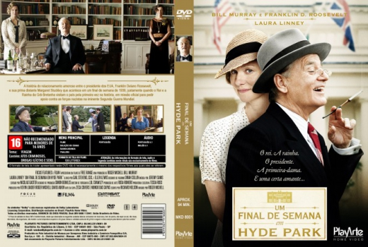

Um Final de Semana em Hyde Park (2012)


The President. The First Lady. The King. The Queen. The Mother. The Mistress...One weekend would unite two great nations...After cocktails of course.

Avaliação (TMDb):


5.3/10 (172 votos)
Avaliação (Usuário):
Outro Título:Hyde Park on Hudson
País:United States, 94 minutos
Idiomas falados:Inglês, Português
Gênero(s):Comédia, Drama, História
Diretor(s):Roger Michell
Codec:MPEG-2 (DVD)
Número: 5342
Sinopse:
A história do caso de amor entre Franklin Delano Roosevelt e sua prima distante, Margaret Stuckley, centrou-se no fim de semana de 1939, quando o rei e a rainha do Reino Unido visitaram o norte de Nova York.
Elenco:
Bill Murray, Laura Linney, Samuel West, Olivia Colman, Olivia Williams
Tipo de mídia: DVD R/RW,
Legendas: Português, Sem Legendas
Alugado: Não
Tela: Anamorphic Widescreen